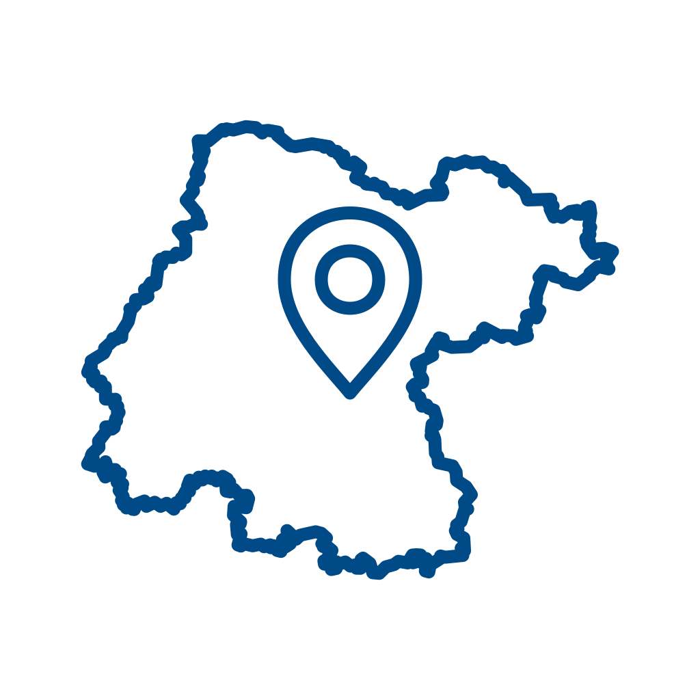

Panorama Sociodemográfico de los
Pueblos y Comunidades Indígenas y Afromexicanas
del Estado de Guanajuato
Mapa de Guanajuato
Revista Digital
107
Comunidades

13
Municipios
N
Escala dinámica
0
25
50 km
+
−
⟲
Capas
Institucional
Calles
Satélite
Relieve
Límites de municipios
Panorama por Municipio
✕
Panorama Municipal
▾
Simbología
107 Comunidades reconocidas
13 Municipios con presencia
Resto del estado (33 municipios)
✕
Otomí
San Miguel de Allende
Clave INEGI: 110030008
Alonso Yáñez
Población total
-
Viviendas habitadas
-
Hablantes de lengua
-
Contexto comunitario
Coordenadas geográficas:
21° 02' 44" N, 100° 49' 00" W
Ver ubicación en Google Maps
Descargar Infografía A2 (PDF)